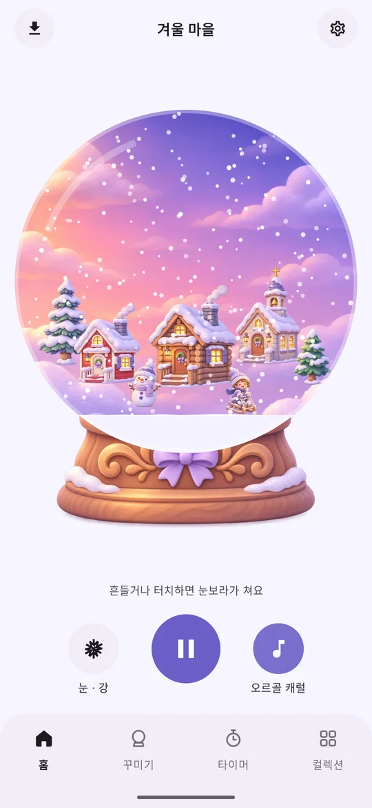
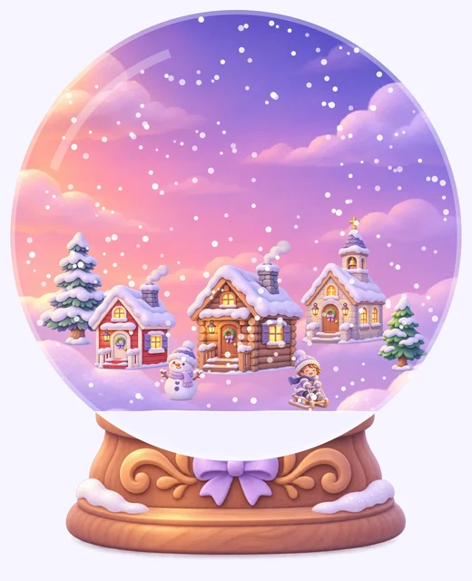
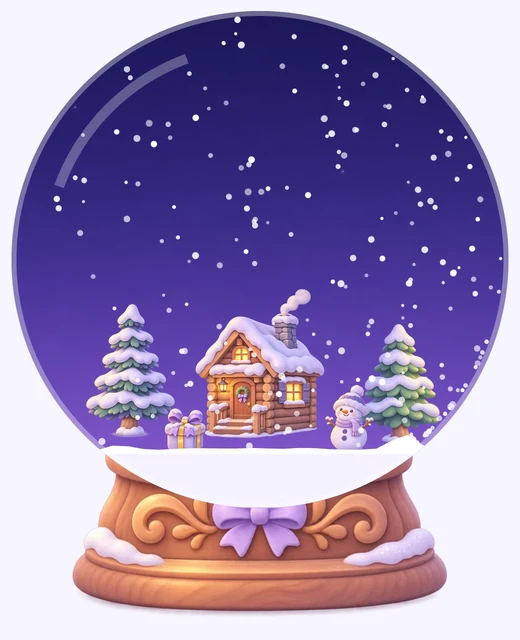
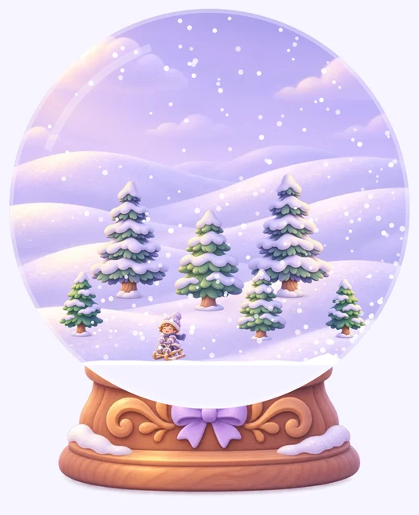
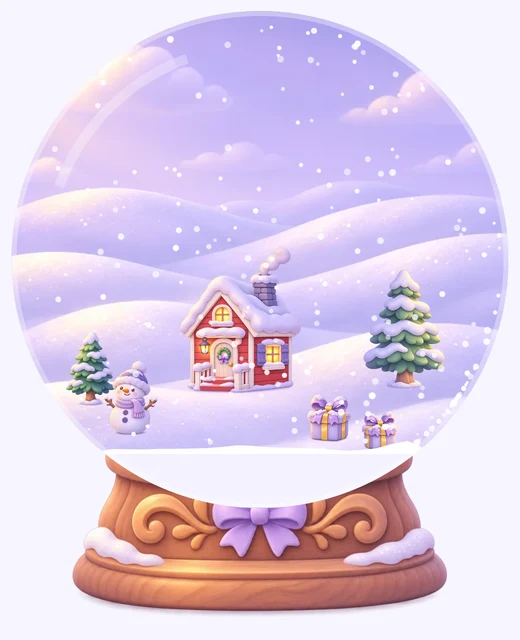
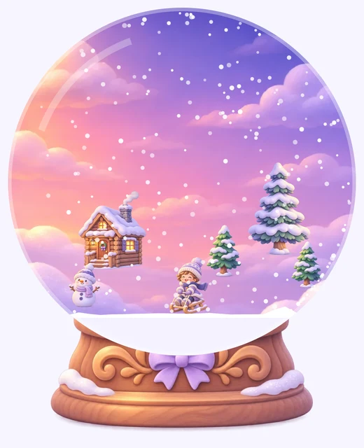
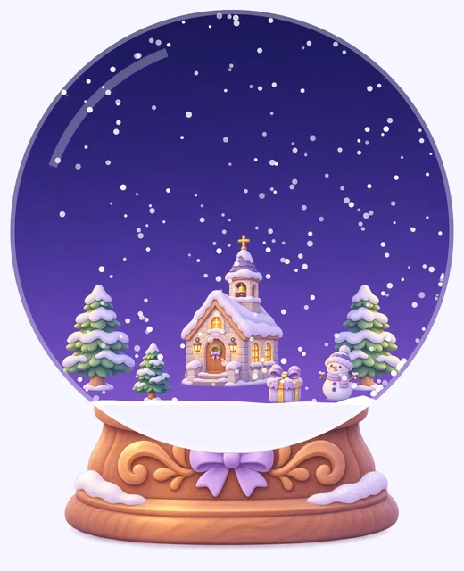
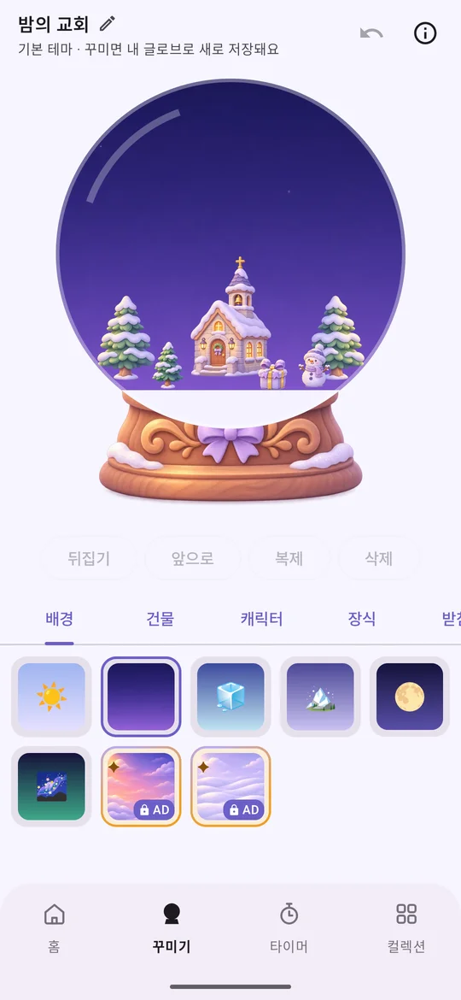
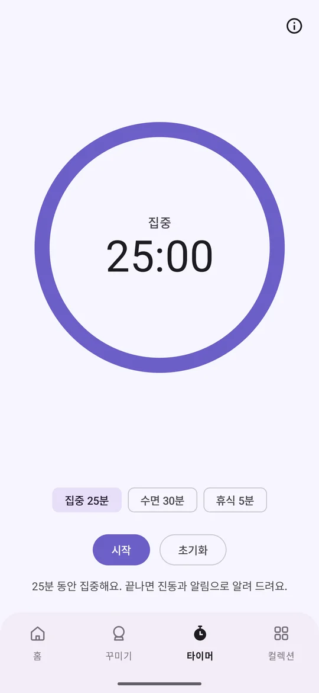

❄ 잠깐 쉬어 가는 작은 힐링 앱
손안에 담은
손안에 담은
작은 겨울 세상
유리볼 속에 눈이 끝없이 내려요. 흔들면 눈보라가 일고, 내 마음대로 작은 마을을 꾸밀 수 있어요. 잔잔한 음악과 함께 쉬거나 집중해 보세요.
무료 · Android 8.0 이상 · 한국어·영어

바로 감상하는 기본 테마 6종
마음에 드는 테마를 고르고 눈이 내리는 걸 바라보세요. 동화책처럼 따뜻한 그림으로 그렸어요.






스노우볼 하나에 담은 작은 즐거움
켜 두고 바라만 봐도 좋고, 나만의 스노우볼로 꾸며도 좋아요.
흔들면 눈보라
폰을 흔들거나 볼을 터치하면 눈이 휘몰아쳐요. 오래 켜 두면 눈이 조금씩 쌓여요.
내 손으로 꾸미기
하늘을 고르고 오두막·교회·전나무·눈사람·선물을 놓아 보세요. 끌어서 옮기고, 크기를 바꾸고, 뒤집을 수 있어요.
집중·휴식 타이머
25분 집중, 5분 휴식, 그리고 소리가 서서히 줄어드는 30분 수면 타이머까지.
라이브 배경화면
홈 화면과 잠금 화면에도 스노우볼을. 폰을 기울이면 눈도 함께 흘러내려요.
사진·영상 저장과 공유
지금 모습을 사진으로, 또는 음악이 담긴 5·10·15초 영상으로 저장해 친구에게 보내 보세요.
포근한 배경음
잔잔한 피아노, 오르골 캐럴, 타닥타닥 벽난로, 겨울바람 소리. 밤 모드는 저녁 7시가 지나면 볼을 은은하게 어둡게 해요.
앱 화면 미리 보기
감상
재생·일시정지, 눈 세기, 배경음을 버튼 하나로 바꿔요.

꾸미기
꾸미는 대로 자동 저장돼요. 기본 테마를 고치면 내 글로브로 새로 저장돼요.

집중
앱을 나가도 타이머는 계속 돌고, 끝나면 알려 드려요.